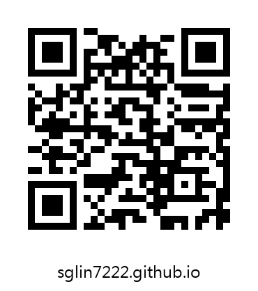

Python 自動化課程作業
兩份作業都要交程式與報告。報告必須包含「報告題目、目的、報告內容項目」，內容項目一律依實際執行結果撰寫。
報告共同規定
- 報告題目：自訂一個能表達作業內容的題目，不可只寫「作業一」。
- 目的：說明程式要解決什麼問題、預期達成什麼效果，100 到 200 字。
- 報告內容項目：每一項都要附上自己實際執行的證據（截圖或程式產生的紀錄檔）。抄範例、憑想像寫的結果一律不計分。
範例程式每次執行都會在 results/ 目錄留下這次的真實結果（Markdown 與 JSON），寫報告時直接引用即可。
下載
| 檔案 | 說明 |
|---|---|
| gmail_auto.py | 作業一範例程式（只用 Python 標準函式庫） |
| config.example.json | 作業一設定檔範本，複製成 config.json 後填入帳號與應用程式密碼 |
| qr_web.py | 作業二範例程式（需 qrcode、opencv-python-headless） |
| 作業說明.docx / .md | 作業一說明文件 |
| 作業說明_QRCode.docx / .md | 作業二說明文件 |
掃描進入本頁

這張 QR Code 就是用作業二的範例程式產生的，指向 https://sglin7222.github.io/。